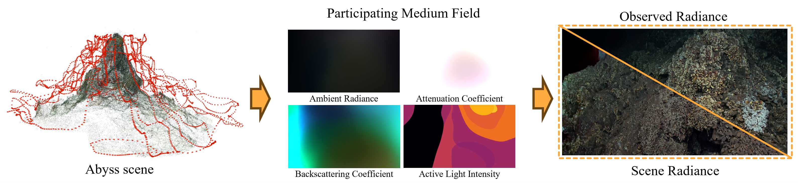
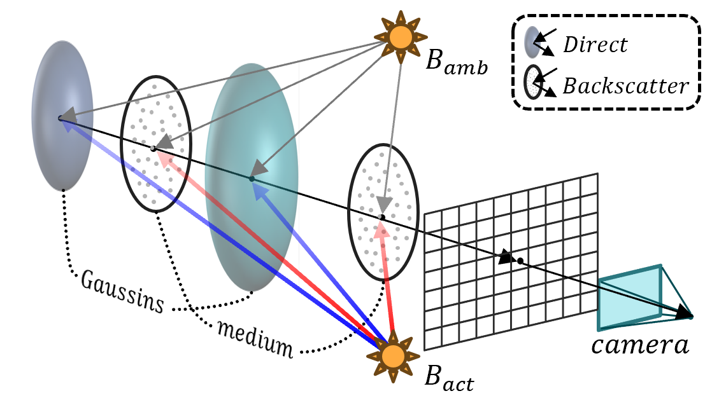
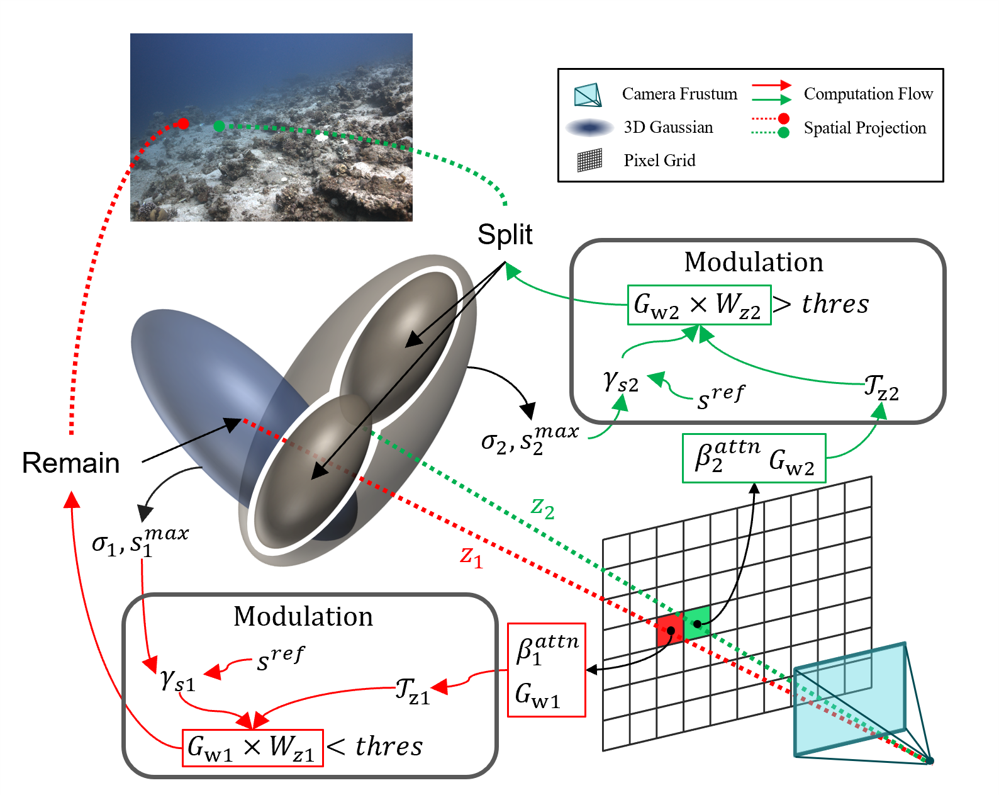
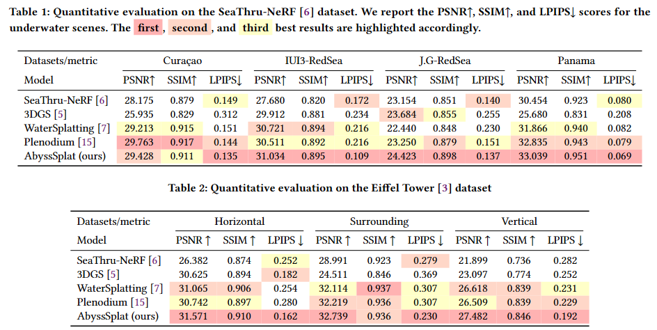

arXiv(Comming Soon)
Code(Comming Soon)
arXiv(Comming Soon)
Code(Comming Soon)

AbyssSplat reconstructs deep-sea scenes under active illumination, decoupling non-uniform lighting from scene-intrinsic radiance via Gaussian Splatting.
We introduce AbyssSplat, the first 3D reconstruction framework specifically designed for complex deep-sea optical environments. AbyssSplat incorporates two core innovations: a Hybrid Light Field Illumination Attenuation Model, which explicitly models active light source scattering to achieve physical-domain decoupling between non-uniform illumination and scene-intrinsic radiance; and a Medium-Guided Densification Modulation Mechanism, which integrates medium transmittance and Gaussian attributes to construct a geometric confidence, applying adaptive gradient amplitude modulation to low-confidence regions to suppress overfitting of medium noise by Gaussian primitives. Evaluations on the Eiffel Tower deep-sea and SeaThru-NeRF shallow-water datasets demonstrate that AbyssSplat achieves consistent state-of-the-art performance across all scenes, with average PSNR improvements of 0.67 dB and 0.39 dB respectively over the best competing methods, alongside up to 49.5% LPIPS reduction—while requiring fewer Gaussian primitives and less training time.
AbyssSplat addresses the unique optical challenges of deep-sea environments through two complementary innovations.


Method Comparison — Deep-Sea Scenes
Scene Restorations

The renderer is built on Splatfacto and SeaThru-NeRF (nerfstudio reimplementation).